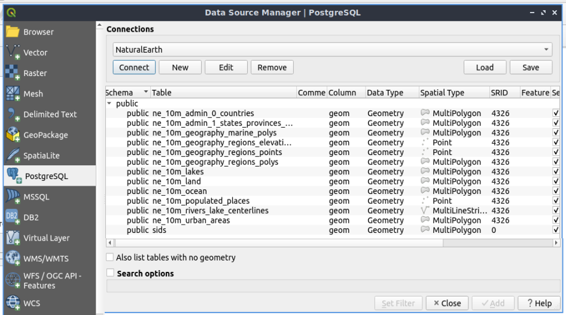
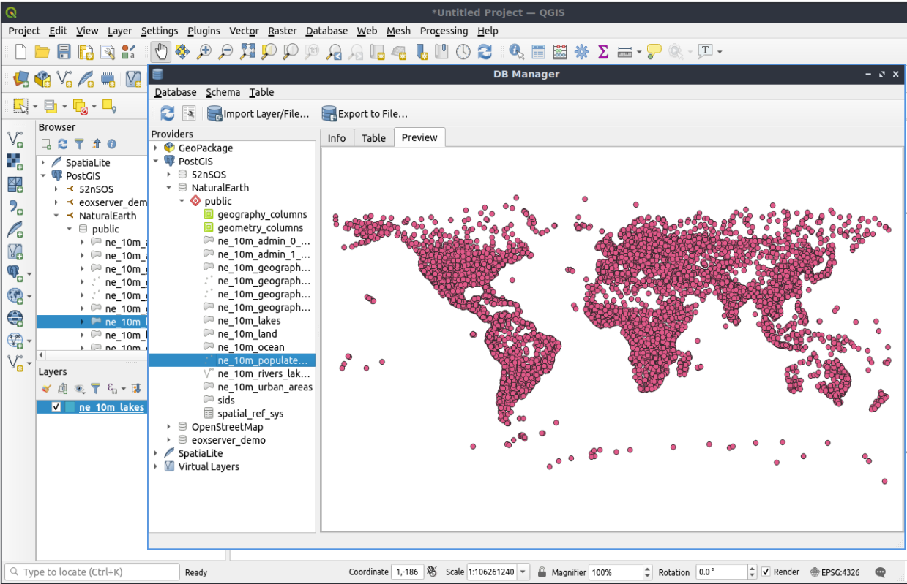

PostGIS snabbstart¶
PostGIS lägger till spatiala funktioner i PostgreSQL relationsdatabas. Det utökar PostgreSQL så att det kan lagra, fråga och manipulera spatiala data. I den här snabbstarten kommer vi att använda ”PostgreSQL” när vi beskriver allmänna databasfunktioner och ”PostGIS” när vi beskriver den ytterligare spatiala funktionaliteten som tillhandahålls av PostGIS.
Denna snabbstart beskriver hur du gör:
Skapa och fråga en spatial databas från kommandoraden och den grafiska klienten QGIS.
Hantera data från klienten
pgAdmin.
Innehåll
Klient-server-arkitektur¶
PostgreSQL, som många databaser, fungerar som en server i ett klient-serversystem. Klienten gör en begäran till servern och får tillbaka ett svar. Det här är på samma sätt som internet fungerar - din webbläsare är en klient och en webbserver skickar tillbaka webbsidan. Med PostgreSQL är förfrågningarna på SQL-språket och svaret är vanligtvis en tabell med data från databasen.
Det finns inget som hindrar servern från att vara på samma dator som klienten, och detta gör att du kan använda PostgreSQL på en enda maskin. Din klient ansluter till servern via den interna ”loopback” -nätverksanslutningen och är inte synlig för andra datorer om du inte konfigurerar den så att den ska vara det.
Skapa en databas med spatial kompatibilitet¶
Kommandoradsklienter körs från ett Terminal Emulator-fönster.
Starta en terminalemulator (för närvarande LXTerminal) från menyn Program i avsnittet Tillbehör. Detta ger dig en kommandoprompt för ett Unix-skal. Skriv in:
psql -V
och tryck på enter för att se PostgreSQL-versionens nummer.
En enda PostgreSQL-server låter dig organisera arbete genom att ordna det i separata databaser. Varje databas är en oberoende regim med sina egna tabeller, vyer, användare och så vidare. När du ansluter till en PostgreSQL-server måste du ange en databas.
Du kan få en lista över databaser på servern med hjälp av:
psql -l
kommandot. Du bör se flera databaser som används av några av projekten i systemet. Vi kommer att skapa en ny för den här snabbstarten.
Tips
Listan använder en standard unix-pager - tryck på mellanslag för nästa sida, b för att gå tillbaka, q för att avsluta, h för hjälp.
PostgreSQL ger oss ett verktygsprogram för att skapa databaser, createdb. Vi måste skapa en databas innan vi lägger till PostGIS-tilläggen. Vi kallar vår databas `` demo``. Kommandot är då:
createdb demo
Tips
Du kan vanligtvis få hjälp för kommandoradsverktyg genom att använda alternativet --help.
Om du nu kör psql -l bör du se din demo-databas i listan. Vi har inte lagt till PostGIS-tillägget ännu, men i nästa avsnitt får du lära dig hur.
Du kan skapa PostGIS-databaser med hjälp av SQL-språket. Först tar vi bort den databas vi just skapade med kommandot dropdb, sedan använder vi kommandot psql för att få en SQL-kommandotolk:
dropdb demo
psql -d postgres
Detta ansluter till den centrala systemdatabasen som heter postgres. Ange nu SQL för att skapa en ny databas:
postgres=# CREATE DATABASE demo;
Byt nu din anslutning från postgres-databasen till den nya demo-databasen. I framtiden kan du ansluta till den direkt med psql -d demo, men här är ett snyggt sätt att byta inom kommandoraden psql:
postgres=# \c demo
Tips
Tryck på CTRL + C om psql-prompten fortsätter att visas efter att du tryckt på retur. Det rensar din inmatning och börjar om igen. Den väntar förmodligen på ett avslutande citattecken, semikolon eller något annat.
Du bör se ett informationsmeddelande och prompten ändras så att den visar att du nu är ansluten till databasen demo.
Lägg sedan till PostGIS-tillägget:
demo=# create extension postgis;
För att verifiera att du har postgis now installerat kör du följande fråga:
demo=# SELECT postgis_version();
postgis_version
---------------------------------------
2.3 USE_GEOS=1 USE_PROJ=1 USE_STATS=1
(1 row)
PostGIS installerar många funktioner, en tabell och flera vyer
Skriv dt för att lista tabellerna i databasen. Du bör se något i stil med detta:
demo=# \dt
List of relations
Schema | Name | Type | Owner
--------+------------------+-------+-------
public | spatial_ref_sys | table | user
(1 row)
Tabellen spatial_ref_sys används av PostGIS för att konvertera mellan olika spatiala referenssystem. Tabellen spatial_ref_sys lagrar information om giltiga spatiala referenssystem, och vi kan använda lite SQL för att ta en snabb titt:
demo=# SELECT srid, auth_name, proj4text FROM spatial_ref_sys LIMIT 10;
srid | auth_name | proj4text
------+-----------+--------------------------------------
3819 | EPSG | +proj=longlat +ellps=bessel +towgs...
3821 | EPSG | +proj=longlat +ellps=aust_SA +no_d...
3824 | EPSG | +proj=longlat +ellps=GRS80 +towgs8...
3889 | EPSG | +proj=longlat +ellps=GRS80 +towgs8...
3906 | EPSG | +proj=longlat +ellps=bessel +no_de...
4001 | EPSG | +proj=longlat +ellps=airy +no_defs...
4002 | EPSG | +proj=longlat +a=6377340.189 +b=63...
4003 | EPSG | +proj=longlat +ellps=aust_SA +no_d...
4004 | EPSG | +proj=longlat +ellps=bessel +no_de...
4005 | EPSG | +proj=longlat +a=6377492.018 +b=63...
(10 rows)
Detta bekräftar att vi har en databas med spatial aktivering.
Förutom den här tabellen finns det flera vyer som skapas när du aktiverar Postgis i din databas.
Skriv dv för att lista vyerna i databasen. Du bör se något i stil med detta:
demo=# \dv
List of relations
Schema | Name | Type | Owner
--------+-------------------+------+----------
public | geography_columns | view | postgres
public | geometry_columns | view | postgres
public | raster_columns | view | postgres
public | raster_overviews | view | postgres
(4 rows)
PostGIS har stöd för flera olika typer av spatiala data:
geometry - är en datatyp som lagrar data som vektorer ritade på en plan yta
geography - är en datatyp som lagrar data som vektorer ritade på en sfäroid yta
- raster - är en datatyp som lagrar data som en n-dimensionell matris där varje position (pixel) representerar
ett område av rymden, och varje band (dimension) har ett värde för varje pixelutrymme.
Vyerna geometry_columns, geography_columns och raster_columns har till uppgift att tala om för PostGIS vilka tabeller som har PostGIS geometri-, geografi- och rasterkolumner.
Översikter är tabeller med lägre upplösning för rasterdata. I raster_overviews listas sådana tabeller och deras rasterkolumn och den tabell som varje tabell är en översikt för. Rasteröversiktstabeller används av verktyg som QGIS för att tillhandahålla versioner med lägre upplösning av rasterdata för snabbare laddning.
PostGIS geometry type är den första och fortfarande mest populära typen som används av PostGIS-användare. Vi kommer att fokusera vår uppmärksamhet på den typen.
Skapa en spatial tabell med hjälp av SQL¶
Nu när vi har en spatial databas kan vi skapa några spatiala tabeller.
Först skapar vi en vanlig databastabell för att lagra vissa stadsdata. Den här tabellen har tre fält - ett för ett numeriskt ID som identifierar staden, ett för stadens namn och ett för geometrikolumnen:
demo=# CREATE TABLE cities ( id int4 primary key, name varchar(50), geom geometry(POINT,4326) );
Vanligtvis kallas denna geometrikolumn för geom (den äldre PostGIS-konventionen var the_geom). Detta talar om för PostGIS vilken typ av geometri varje objekt har (punkter, linjer, polygoner etc.), hur många dimensioner (i det här fallet 2, om det hade 3 eller 4 dimensioner skulle vi använda POINTZ, POINTM eller POINTZM) och det spatiala referenssystemet. Vi använde EPSG:4326-koordinater för våra städer.
Om du nu kontrollerar tabellen över städer bör du se den nya kolumnen och bli informerad om att tabellen för närvarande inte innehåller några rader.
demo=# SELECT * from cities;
id | name | geom
----+------+----------
(0 rows)
För att lägga till rader i tabellen använder vi några SQL-satser. För att få in geometrin i geometrikolumnen använder vi PostGIS-funktionen ST_GeomFromText för att konvertera från ett textformat som ger koordinaterna och ett id för det spatiala referenssystemet:
demo=# INSERT INTO cities (id, geom, name) VALUES (1,ST_GeomFromText('POINT(-0.1257 51.508)',4326),'London, England');
demo=# INSERT INTO cities (id, geom, name) VALUES (2,ST_GeomFromText('POINT(-81.233 42.983)',4326),'London, Ontario');
demo=# INSERT INTO cities (id, geom, name) VALUES (3,ST_GeomFromText('POINT(27.91162491 -33.01529)',4326),'East London,SA');
Tips
Använd piltangenterna för att hämta och redigera kommandorader.
Som du kan se blir detta snabbt alltmer tråkigt. Lyckligtvis finns det andra sätt att få in data i PostGIS-tabeller som är mycket enklare. Men nu har vi tre städer i vår databas, och vi kan arbeta med det.
Enkla frågor¶
Alla vanliga SQL-operationer kan användas för att välja data från en PostGIS-tabell:
demo=# SELECT * FROM cities;
id | name | geom
----+-----------------+----------------------------------------------------
1 | London, England | 0101000020E6100000BBB88D06F016C0BF1B2FDD2406C14940
2 | London, Ontario | 0101000020E6100000F4FDD478E94E54C0E7FBA9F1D27D4540
3 | East London,SA | 0101000020E610000040AB064060E93B4059FAD005F58140C0
(3 rows)
Detta ger oss en kodad hexadecimal version av koordinaterna, inte så användbar för människor.
Om du vill titta på din geometri i WKT-format igen kan du använda funktionerna ST_AsText(geom) eller ST_AsEwkt(geom). Du kan också använda ST_X(geom), ST_Y(geom) för att få fram koordinaternas numeriska värde:
demo=# SELECT id, ST_AsText(geom), ST_AsEwkt(geom), ST_X(geom), ST_Y(geom) FROM cities;
id | st_astext | st_asewkt | st_x | st_y
----+------------------------------+----------------------------------------+-------------+-----------
1 | POINT(-0.1257 51.508) | SRID=4326;POINT(-0.1257 51.508) | -0.1257 | 51.508
2 | POINT(-81.233 42.983) | SRID=4326;POINT(-81.233 42.983) | -81.233 | 42.983
3 | POINT(27.91162491 -33.01529) | SRID=4326;POINT(27.91162491 -33.01529) | 27.91162491 | -33.01529
(3 rows)
Spatiala frågor¶
PostGIS lägger till många funktioner med spatial funktionalitet till PostgreSQL. Vi har redan sett ST_GeomFromText som konverterar WKT till geometri. De flesta av dem börjar med ST (för spatial typ) och listas i ett avsnitt i PostGIS-dokumentationen. Vi kommer nu att använda en för att svara på en praktisk fråga - hur långt är dessa tre Londons från varandra, i meter, förutsatt att en sfärisk jord?
demo=# SELECT p1.name,p2.name,ST_DistanceSphere(p1.geom,p2.geom) FROM cities AS p1, cities AS p2 WHERE p1.id > p2.id;
name | name | st_distancesphere
-----------------+-----------------+--------------------
London, Ontario | London, England | 5875766.85191657
East London,SA | London, England | 9789646.96784908
East London,SA | London, Ontario | 13892160.9525778
(3 rows)
Detta ger oss avståndet, i meter, mellan varje par av städer. Lägg märke till hur ”WHERE”-delen av raden hindrar oss från att få tillbaka avstånden från en stad till sig själv (som alla kommer att vara noll) eller de omvända avstånden till dem i tabellen ovan (London, England till London, Ontario är samma avstånd som London, Ontario till London, England). Prova utan ”WHERE”-delen och se vad som händer.
Vi kan också beräkna avståndet med hjälp av en sfäroid genom att använda en annan funktion och ange sfäroidnamn, halvstoraxel och parametrar för invers utplattning:
demo=# SELECT p1.name,p2.name,ST_DistanceSpheroid(
p1.geom,p2.geom, 'SPHEROID["GRS_1980",6378137,298.257222]'
)
FROM cities AS p1, cities AS p2 WHERE p1.id > p2.id;
name | name | st_distancespheroid
-----------------+-----------------+----------------------
London, Ontario | London, England | 5892413.63776489
East London,SA | London, England | 9756842.65711931
East London,SA | London, Ontario | 13884149.4140698
(3 rows)
För att avsluta PostgreSQL kommandorad, ange:
\q
Du är nu tillbaka i systemkonsolen:
user@osgeolive:~$
Kartläggning¶
För att producera en karta från PostGIS-data behöver du en klient som kan komma åt data. De flesta GIS-program med öppen källkod kan göra detta - QGIS, gvSIG, uDig till exempel. Nu ska vi visa dig hur du gör en karta från QGIS.
Starta QGIS från Desktop GIS-menyn och välj Add PostGIS layers från lagermenyn. Parametrarna för att ansluta till Natural Earth-data i PostGIS är redan definierade i rullgardinsmenyn Connections. Här kan du definiera nya serveranslutningar och lagra inställningarna så att du lätt kan komma ihåg dem. Klicka på rullgardinsmenyn Connections och välj Natural Earth. Klicka på ”Redigera” om du vill se vilka parametrar som gäller för Natural Earth, eller klicka på ”Anslut” för att fortsätta:

Du kommer nu att få en lista över de spatiala tabellerna i databasen:
{kind=link}
Välj tabellen ne_10m_lakes och tryck på Add längst ner (inte Load längst upp - då laddas databasanslutningsparametrar), så ska den laddas in i QGIS:

Du bör nu se en karta över sjöarna. QGIS vet inte att det är sjöar och kanske därför inte färgar dem blå för dig - använd QGIS-dokumentationen för att ta reda på hur du ändrar detta. Zooma in till en berömd grupp sjöar i Kanada.
Importera spatiala data till databasen¶
De flesta av OSGeos skrivbordsverktyg har funktioner för att importera spatiala data från andra format (t.ex. ESRI Shape) till databasen. Återigen använder vi QGIS för att visa detta.
Import av shapefiler till QGIS kan göras via den praktiska QGIS Database Manager. Du hittar hanteraren i menyn. Gå till Databas -> DB-hanterare.
Distribuerar Postgis-objektet och sedan NaturalEarth-objektet. Den kommer sedan att ansluta till Natural Earth-databasen. Lämna lösenordet tomt om det efterfrågas. I det offentliga objektet finns en lista över de lager som tillhandahålls av databasen. Du kommer att se huvudhanteringsfönstret. Till vänster kan du välja tabeller från databasen och använda flikarna till höger för att ta reda på mer om dem. Fliken Preview visar dig en liten karta.
{kind=link}
Vi kommer nu att använda DB Manager för att importera en shapefil till databasen. Vi kommer att använda data från North Carolina om plötslig spädbarnsdöd (SIDS) som ingår i ett av R-statistikpaketets tillägg.
Från menyn Table välj alternativet Import layer/file. Tryck på knappen ... och bläddra till shapefilen sids.shp i R-katalogen. (finns i /home/user/data/vector/R/shapes):

Låt allt annat vara som det är och tryck på Load

Låt Coordinate Reference System Selector vara standard (WGS 84 EPSG:4326) och tryck på OK. Shapefilen bör importeras till PostGIS utan några fel. Stäng DB Manager och gå tillbaka till huvudfönstret i QGIS.
Ladda nu in SIDS-data i kartan med hjälp av alternativet ”Add PostGIS Layer”. Med lite omorganisering av lagren och lite färgläggning bör du kunna producera en koropletkarta över antalet fall av plötslig spädbarnsdöd (fält sid74 eller sid79) i North Carolina:

Varning
Beroende på vilken version av OSGeoLive du använder (ISO eller VMDK) kommer du inte att hitta samma klienter tillgängliga. pgAdmin är den officiella klienten för PostgreSQL, men av tekniska skäl kan den inte göra i ISO, så den är endast tillgänglig i VMDK-versionen. ISO-versionen har `` phpPgAdmin `` -klienten som erbjuder samma kärnfunktionalitet.
Lär känna phpPgAdmin (ISO & VMDK)¶
I båda versionerna kan du använda den grafiska databasklienten phpPgAdmin.
med phpPgAdmin kan du använda SQL för att manipulera dina datatabeller. Du kan hitta och starta phpPgAdmin från mappen Databaser som finns på OSGeoLive Desktop.

Här har du möjlighet att skapa en ny anslutning till en PostgreSQL-server eller ansluta till en befintlig server. Den röda ”X” på PostgreSQL -servern anger att du ännu inte har anslutits. Klicka på den och ange sedan användarnamnet user och huvudlösenordet user.
När anslutningen har upprättats kan du se en lista över de databaser som redan finns i systemet.

I det här läget kan du bara se de databaser som finns i systemet. Du kan ansluta genom att klicka på plustecknet till vänster om namnet på en databas. Gör det för databasen natural_earth2.
Du kan nu se att det bara finns ett schema i den här databasen som heter public. Klicka på plustecknet till vänster om Tables för att expandera det, så kan du se alla tabeller som finns i detta schema.

Exekvera en SQL-fråga från phpPgAdmin (ISO & VMDK)¶
phpPgAdmin erbjuder möjligheten att exekvera frågor till en relationsdatabas.
För att göra en sökning i databasen klickar du tillbaka på databasen natural_earth2 och trycker sedan på SQL-knappen i huvudverktygsfältet (den till vänster med databassymbolen).
Vi ska ta reda på andelen plötsliga spädbarnsdödar i förhållande till antalet födda under 1974 för varje stad. Dessutom ska vi sortera resultatet baserat på den beräknade frekvensen. För att göra det måste vi utföra följande fråga (skicka in den i textredigeraren i SQL-fönstret):
select name, 1000*sid74/bir74 as rate from sids order by rate;
Därefter ska du trycka på knappen Execute.

Lär känna pgAdmin (endast VMDK)¶
Du kan använda den grafiska databasklienten pgAdmin från menyn Databaser för att fråga och ändra din databas icke-spatialt. Detta är den officiella klienten för PostgreSQL.
med pgAdmin kan du använda SQL för att manipulera dina datatabeller. Du kan hitta och starta pgAdmin från mappen Databaser, som finns på OSGeoLive Desktop.

Ange huvudlösenordet user.
Här har du möjlighet att skapa en ny anslutning till en PostgreSQL-server eller ansluta till en befintlig server. I det här fallet kommer vi att ansluta till den fördefinierade `` localhost`` -servern.
När anslutningen har upprättats kan du se en lista över de databaser som redan finns i systemet.

Det röda ”X” på bilden av de flesta av databaserna visar att du ännu inte har anslutit till någon av dem (du är endast ansluten till standarddatabasen postgres). I det här läget kan du bara se de databaser som finns i systemet. Du kan ansluta genom att dubbelklicka på namnet på en databas. Gör det för databasen natural_earth2.
Du kan nu se att det röda X:et har försvunnit och att ett ”>” har dykt upp till vänster. Genom att trycka på det kommer ett träd att visas, som visar innehållet i databasen.
Navigera till underträdet schemas och expandera det. Expandera därefter schemat public. Genom att navigera och expandera Tables kan du se alla tabeller som ingår i detta schema.

Utföra en SQL-fråga från pgAdmin (endast VMDK)¶
pgAdmin, ger möjlighet att utföra frågor till en relationsdatabas.
För att göra en sökning i databasen måste du trycka på knappen Query Tool i huvudverktygsfältet (den till vänster med databassymbolen).
Vi ska ta reda på andelen plötsliga spädbarnsdödar i förhållande till antalet födda under 1974 för varje stad. Dessutom ska vi sortera resultatet baserat på den beräknade frekvensen. För att göra det måste vi utföra följande fråga (skicka in den i textredigeraren i SQL-fönstret):
select name, 1000*sid74/bir74 as rate from sids order by rate;
Därefter ska du trycka på pilknappen som pekar åt höger (Execute).

Lär känna Foreign Data Wrappers (FDW)¶
Från din databas kan du komma åt fjärrobjekt som tabeller från andra PostgreSQL-databaser eller ansluta till fjärrdatabaser som Oracle, MySQL, MS SQL eller CouchDB. Du kan också ansluta via ODBC, ansluta till CSV, Geospatial Data och till och med till twitter.
Du hittar en lista över olika FDW på:
Låt oss se hur det fungerar! Det enklaste sättet är att ansluta till en annan PostgreSQL-databas.
Så här går du tillväga:
Ladda först tillägget för Foreign Data Wrapper som du vill använda. För en anslutning till en annan PostgreSQL-databas behöver du postgres_fdw
CREATE EXTENSION postgres_fdw;
Skapa en Foreign Server som talar om var du hittar den datakälla som du vill ansluta
CREATE SERVER fdw_pg_server_osm_local
FOREIGN DATA WRAPPER postgres_fdw
OPTIONS (host '127.0.0.1', port '5432', dbname 'osm_local');
Definiera den användare som ska användas när du ansluter till den utländska servern
CREATE USER MAPPING FOR user
SERVER fdw_pg_server_osm_local
OPTIONS (user 'user', password 'user');
Nu kan du skapa en utländsk tabell.
IMPORT FOREIGN SCHEMA public
LIMIT TO (planet_osm_polygon, planet_osm_point) -- or EXCEPT
FROM SERVER fdw_pg_server_osm_local
INTO public;
Hitta nya tabeller i din databas och titta på data från en utländsk tabell.
Select * from planet_osm_polygon limit 10;
Anslut till en OGR-datakälla på distans via ogr_fdw¶
Tillägget ogr_fdw tillåter anslutning till flera geodataformat som KML, GeoPackage, WFS, GeoJSON, GPX, GML och mer.
Läs mer om ogr_fdw:
Nytt och förbättrat: http://blog.cleverelephant.ca/2016/04/ogr-fdw-update.html
Installera tillägget ogr_fdw i din databas.
Skriv i databasprompten:
CREATE EXTENSION ogr_fdw;
Kontrollera vilka format som stöds:
Öppna en terminal och sök efter ogr_fdw_info:
locate ogr_fdw_info
/usr/lib/postgresql/10/bin/ogr_fdw_info -f
Resultaten kan se ut så här:
Supported Formats:
-> "OGR_GRASS" (readonly)
-> "PCIDSK" (read/write)
-> "netCDF" (read/write)
-> "JP2OpenJPEG" (readonly)
-> "PDF" (read/write)
-> "MBTiles" (read/write)
-> "EEDA" (readonly)
-> "ESRI Shapefile" (read/write)
-> "MapInfo File" (read/write)
.... many more
Skapa en FDW till en WFS
Starta Geoserver via .
Öppna GeoServer http://localhost:8082/geoserver/web/
GeoServer WFS GetCapabilities http://localhost:8082/geoserver/ows?service=wfs&version=2.0.0&request=GetCapabilities
GeoServer WFS DescribeFeatureType för topp:states http://localhost:8082/geoserver/ows?service=wfs&version=2.0.0&request=DescribeFeatureType&typename=topp:states
GeoServer WFS GetFeature topp:states http://localhost:8082/geoserver/ows?service=wfs&version=2.0.0&request=GetFeature&typename=topp:states
Skapa en utländsk server som hänvisar till den WFS som du vill ansluta till
CREATE SERVER fdw_ogr_server_wfs
FOREIGN DATA WRAPPER ogr_fdw
OPTIONS ( datasource 'WFS:http://localhost:8082/geoserver/ows', format 'WFS' );
Importera alla WFS feature_types som utländska tabeller med ett enda kommando.
Efter importen kommer du att se flera nya utländska tabeller i ditt schema.
IMPORT FOREIGN SCHEMA ogr_all
FROM SERVER fdw_ogr_server_wfs
INTO public;
Inspektera den utländska datatabellen topp_states:
SELECT * FROM topp_states WHERE state_name = 'Minnesota';
Saker att prova¶
Här är några ytterligare utmaningar som du kan prova:
Prova några fler spatiala funktioner som
st_buffer(geom),st_transform(geom,25831),st_x(geom)- du hittar fullständig dokumentation på http://postgis.net/documentation/Exportera dina tabeller till shapefiler med
pgsql2shppå kommandoraden.Prova
ogr2ogrpå kommandoraden för att importera/exportera data till din databas.Försök att importera data med
shp2pgsqlpå kommandoraden till din databas.Försök att göra vägdragning med hjälp av pgRouting.
Hur vill du gå vidare?¶
Detta är bara det första steget på vägen till att använda PostGIS. Det finns mycket mer funktionalitet som du kan prova.
PostGIS-projektets hemsida - http://postgis.net
PostGIS-dokumentation - http://postgis.net/documentation/